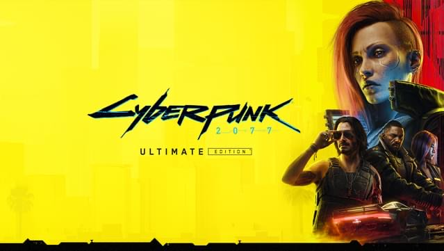

root

《赛博朋克 2077》通关感想
玩了 200 多个小时 真的从夜之城走完一遍。
2020 年发售那年我没买 黑成那样谁敢买。等到 2.x 几个大补丁打完才入坑。整个城市的霓虹和广告牌做得真好——但每一块广告牌念出来都是同一句话。你信吗 我打到一半才发现。
"Wake the fuck up Samurai. We have a city to burn."
主线 5 个结局打了 4 个 隐藏结局还在卡。最后那段独白让我哭了——V 知道自己快不行了 但他还是选了一条没人选过的路。
今天写这个 是因为我意识到 我已经很久没有这种 "自己想清楚一件事" 的感觉了。每天打开手机 信息流推什么我看什么 推什么我点什么。哪怕评论我也是先看高赞再决定立场。
清醒一会儿 真不容易。
—— 资源都在我自己的网盘里 想要的私信。
32 条评论